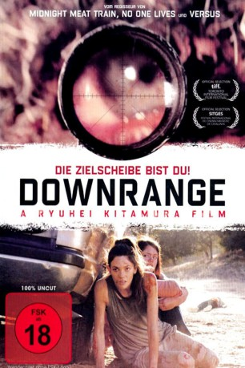

gesehen am 26.06.2019
gesehen am 26.06.2019Alternativ: Downrange (Englischer Titel) gesehen am 26.06.2019
 
 IMDB-Wertung: 5.4 / 10
IMDB-Wertung: 5.4 / 10  Metascore:
Metascore: 
Eine Gruppe von sechs Freunden wird auf ihrem Roadtrip von einem platten Reifen aufgehalten. Gelassen setzen sich die Beifahrer in den Schatten des SUVs, während Fahrer Jeff den Reifen wechselt. Als Sara nach ihm sieht, klafft ein Loch in seinem Schädel - er wurde erschossen! Schnell wird klar, dass auch der Reifen nicht zufällig geplatzt ist. Ein Scharfschütze versteckt sich irgendwo im Umkreis und kann jederzeit von überall aus den Abzug betätigen.
Jahr: 2017
Dauer: 89 Minuten
FSK: 18
Land: USA Studio: A Contracorriente FilmsTonspuren:
Untertitel: Deutsch,
Auflösung: 720p (1280x536) Größe: 2304 MB
Genre: Action, Thriller, Horror
Regisseur: Ryûhei Kitamura
Drehbuch: Ryûhei Kitamura, Joey O'Bryan
Soundtrack: Aldo Shllaku
Darsteller:
Datei: X:\FSK18-2017\Downrange - Die Zielscheibe bist du! (2017, FSK18, 1280x536).mkv seit 24.06.2019
Festplatte: FSK18
 Es gibt insgesamt 24 Filme in der Gruppe 'FSK18-2017'
Es gibt insgesamt 24 Filme in der Gruppe 'FSK18-2017'